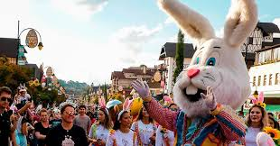
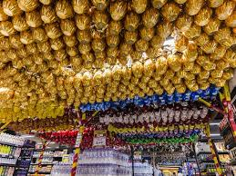

Celebração da Páscoa no Brasil
No Brasil, a Páscoa é uma festa profundamente religiosa, celebrada principalmente pela comunidade católica. Durante a Semana Santa, que antecede o Domingo de Páscoa, ocorrem procissões e missas especiais, como a Procissão do Fogaréu em algumas regiões, onde fiéis carregam tochas e cantam hinos.
Além do aspecto religioso, a Páscoa brasileira é marcada pelo consumo de chocolates. Os ovos de Páscoa são um dos principais símbolos, repletos de surpresas e delícias. É comum as famílias se reunirem para caçar ovos escondidos pelos pais, adaptando a tradição do coelho da Páscoa.
Em algumas regiões, como no Nordeste, há tradições folclóricas, como o Bumba-meu-boi, que embora não seja exclusivamente pascal, está ligado ao período. A Páscoa também é uma oportunidade para confraternizações familiares e a troca de presentes, unindo religião e cultura popular.


